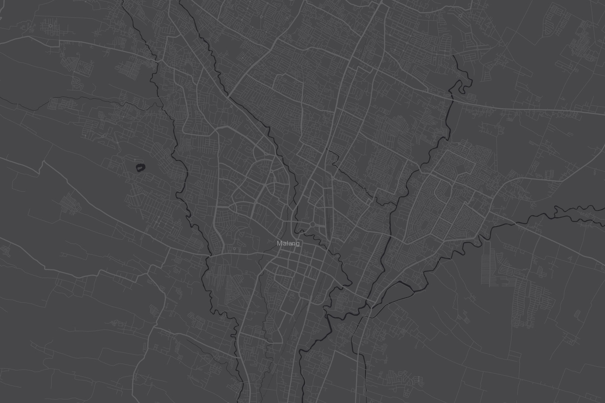

Pengungsi Terdata
4.286jiwa
128
bertambah sejak kemarin
Ringkasan situasi, prioritas bantuan, dan keyakinan model dalam satu layar.
Klasifikasi otomatis GLCM–PCA · tiga tingkat keparahan

Laporan surveior vs prediksi model · 14 hari
Umpan data dari lapangan & model